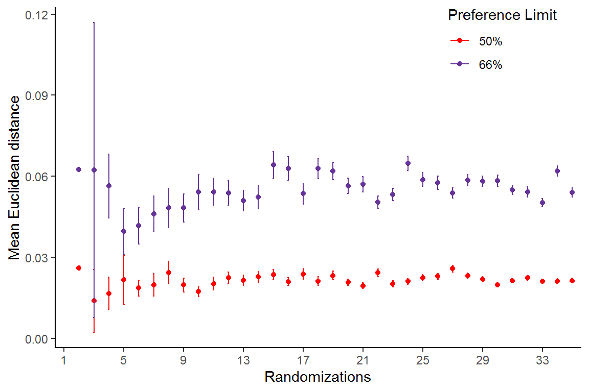
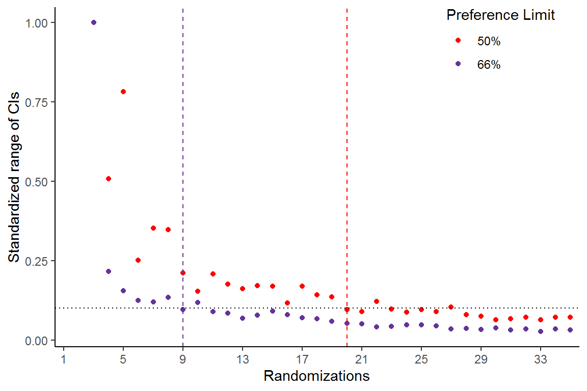

vignettes/tiefightR_cutoffs.Rmd
tiefightR_cutoffs.RmdTies are likely to be present in the data when the response variable of a preference test is binarized. This happens when it is unclear which commodity was preferred by the animal (e.g., when they drank the same amount of liquid). The number of introduced ties will depend on a plethora of factors - of which a very prominent one is the type of commodity. If the animals are especially fond of two similar substances and cannot decide which one they like better, ties are likely. In the binarization process, the stochastic process whether a tie is A or B is modeled by a probability factor (e.g., prefLim=50%) so that the chances of choosing A = B. This can be changed to a more “conservative” rate of, e.g., 66% (as it was reported in the literature). This will, however, introduce more ties…
Eventually, the number of ties will influence the position of a commodity in the ranking of a worth plot. We propose a bootstrapping method that relies on randomizing the ties to determine the “true” position of a commodity. At a small number of randomizations, the position is volatile, which is also indicated by large 95% confidence intervals. The more randomizations are used, the more certain the position of the item becomes.
Here are two examples from the “mouse” data (study 1) at a prefLim of 50% and 95% confidence intervals. The first example was calculated with R=2 randomizations and the second one with R=10.
So, how many randomizations are needed?
Since the result asymptotically approaches an optimum at an increased computational cost, it is better to define a reasonable cutoff and live with some error. In the following example, “mouse” data (study 1) are tested for both, 50% and 66% prefLim. Both analyses were run for up to R=35 randomizations and at each R-step the mean Euclidean distance between the worth values was calculated plus the 95% confidence intervals. As long as the commodity positions are still “moving” they will show increased distance values and confidence intervals. Once they reach a stable position the distance will stabilize. In the second plot, the range of the confidence intervals was standardized to 1, to be able to compare both analyses. All ranges were compared to the maximum range in each plot and a cutoff was set at <10% of the maximum range to determine a threshold for the number of needed randomizations. Another example could be 5% but the computational cost will be significantly higher.
A word of caution: These calculations use the tie_cutoff function and require multiple cpus. Your platform should at least have two cpus to handle this.

#> [1] "Cutoff threshold 50% prefLimit: 20 randomizations are needed"
#> [1] "Cutoff threshold 66% prefLimit: 9 randomizations are needed"